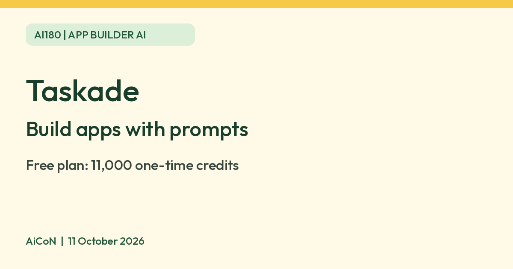

Taskade: free plan gives 11,000 one-time credits to build AI apps
Taskade lets you build small apps and AI agents from prompts. The free plan gives 11,000 one-time credits and up to 3 apps, and the pricing page displays Pro from about 970 rupees ($10) per month; check its billing toggle and checkout total.

What it is
Taskade is a workspace where you can build small apps, AI agents and automations from prompts. Taskade's pricing page says you can build "Taskade Genesis" apps, such as dashboards, landing pages and custom tools, from simple prompts, and clone community apps from its gallery without code.
Is it free
Yes, with limits. Taskade says account holders must be at least 18 years old. Taskade's pricing page lists a Free plan: "$0/mo", "Free forever", 2 users included. It gives 11,000 one-time credits (1,000 when you verify your account and 10,000 on your first app build). These credits do not renew each month. The Free plan keeps up to 3 apps, and a fourth is blocked until you upgrade. The pricing page displays Pro at $10 per month (about ₹970 using an illustrative ₹96.8/USD conversion, not a verified Indian checkout price) with 50,000 credits every month. It has a monthly/yearly toggle and advertises 50% savings with annual billing. Confirm the billing interval, upfront total, taxes and renewal before paying; do not assume the displayed monthly equivalent is a month-to-month charge. Paid-plan extra credit packs start at $5 (about ₹485) for 9,000 credits. Auto top-up uses the $50 pack by default, so leave it off unless you want repeat charges. Packs do not increase the separate automation-run allowance. Taskade says a typical app build uses a few thousand credits.
Is it available in India
We could not confirm this. The pages checked do not establish India-specific signup or billing availability. We did not sign up, build an app or inspect an Indian checkout.
How to try it
- Sign up for the free plan and verify your account to receive the first 1,000 credits.
- Describe an app in plain words, or clone one from the Community Gallery.
- Check how many credits it used before building more. Test the app with sample data, check permissions and sharing, and review each automation before connecting real accounts. A generated app is not proof that payments, access controls or data handling are safe.
Limits to know
- The free credits are one-time. When they run out, the pricing page directs you to upgrade for a monthly allowance and credit packs. Free users can also earn bonus credits through referrals or social actions; do not count on these as a recurring grant. Free has one agent, 10 automation runs a month and Taskade branding. The Free section says three apps have hosting included, while the Pro section says live web hosting starts on Pro; the FAQ says published Free apps stay live. Confirm what publishing is allowed in your account before promising a live site to someone.
- Taskade's privacy policy says some AI providers it routes to are based outside the United States, including in China, depending on the model you pick, and that model choice affects the provider. Auto mode uses plan-default routing, so it is not an explicit choice of one provider. It asks users not to put regulated data, such as payment card data, health records or government ID numbers, into its AI features.
- Taskade says its AI partners are contractually barred from training on your content, and also says it cannot guarantee their compliance.
- We did not test it ourselves.
Taskade says active account data is kept until you delete the account or remove it; account information is targeted for removal within 30 days after account deletion, while backup copies and legal/dispute exceptions can last longer. These are policy targets, not fixed guarantees. Keep personal IDs, payment data and confidential client files out of test apps. We did not verify checkout cancellation or refund terms.
Frequently asked questions
Is Taskade free?
Yes. The Free plan has 11,000 one-time credits and up to 3 apps. The displayed Pro price is about ₹970 ($10) per month; confirm the billing interval and upfront total at checkout.
Sources: Taskade pricing, Taskade privacy policy. Checked 11 October 2026.